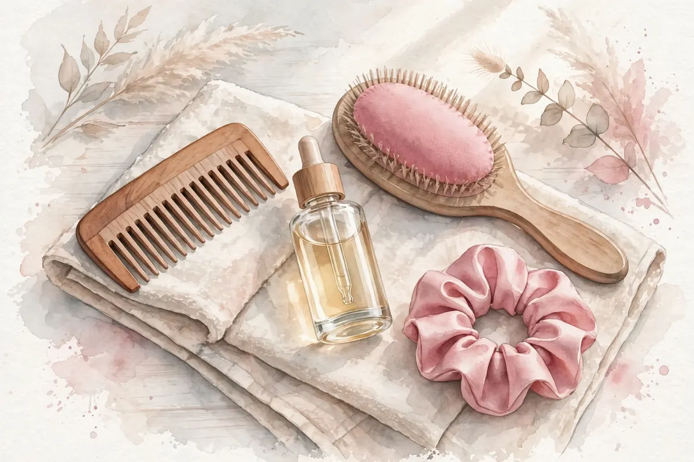

トップ ＞ ヘアケア ＞ ロングヘアの絡まり対策とブラシの選び方
ロングヘアの絡まり対策とブラシの選び方

髪が長くなると、絡まりは日常の小さな困りごとになります。無理に引っ張ってほどこうとすると、髪にも頭皮にも負担がかかる感じがします。施術の現場でも、長い髪を扱うときの手順には決まった型があります。この記事では、その型と、ブラシの選び方を整理します。
絡まりは、毛先からほどく
基本は、毛先から少しずつほどいていくことです。まず毛先の絡まりを手でほぐし、次に中間、最後に根元へと、範囲を上に移していきます。いきなり根元からブラシを通すと、絡まりが下に集まって固くなり、ほどきにくくなります。
強く絡まっている部分は、指でつまんで揺らすようにほぐします。濡れた髪は絡まりやすいので、シャンプー前の乾いた状態で、一度ブラッシングしておくと、洗う手順が楽になります。
ブラシは、目の粗さと大きさで選ぶ
ロングヘアには、面積の広いパドルブラシのような形が、一度に扱える範囲が広くて向きます。ピンの間隔が粗いものは、絡まりをほどく段階に、細かいものは仕上げに、という使い分けもできます。
選ぶときは、自分の髪の量と長さに対して、ブラシの面が小さすぎないかを確認します。クッションの柔らかさも、頭皮への当たり方を左右します。店頭で手に取り、重さと握りやすさを確かめるのが確実です。
ブラッシングは、洗う前と乾かす前の2回
タイミングは、シャンプーの前と、ドライヤーの前の2回が基本です。洗う前にほどいておくと、洗っている最中の絡まりが減ります。乾かす前に一度通しておくと、乾いた後のまとまりが読みやすくなります。
絡まり対策は、ほどく順番と、道具と、タイミング。この3つをそろえることが、毎日の小さな困りごとを減らす近道です。
絡まりやすい場面を知っておくことも、対策の一部です。風の強い日、マフラーや襟の高い服を着る日、うつ伏せで寝た朝など、髪がこすれる場面では絡まりが増えます。外出先で絡まりに気づいたときは、無理に引っ張らず、指で毛先からほぐすのが基本です。カバンに小さいブラシを入れておくと、その場で整えられます。就寝前にゆるく結んでおくと、寝ている間のこすれによる絡まりは減らせます。絡まりは、起きてからほどくものではなく、起きやすい場面を先に知って、ほどく回数自体を減らすものとして考えると、毎日の手間が軽くなります。ブラシ自体の手入れも忘れずに。絡まった髪がピンに残ったままでは、次に使うときの通りが悪くなります。週に一度、ピンの間の髪を取り除き、汚れが気になれば洗って乾かす、という区切りを作っておくと、道具の状態が保てます。
セラフィナ「絡まりは毛先から少しずつ。ブラシは面の広さと目の粗さで選ぼう」